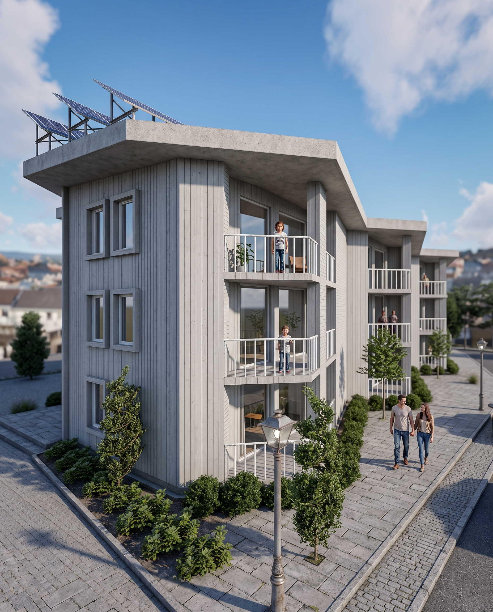
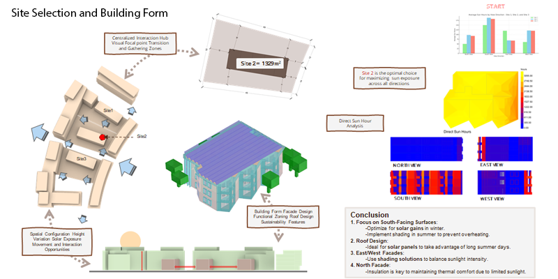
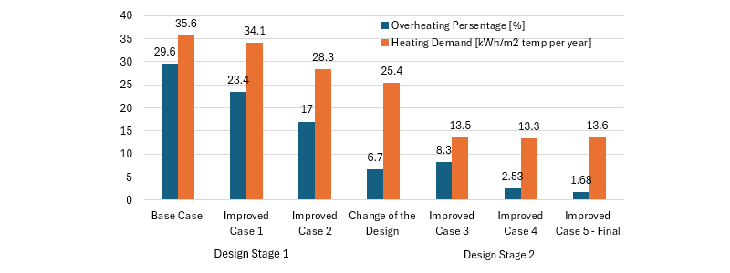

RESIDENTIAL BUILDING AUTUMN'24
Can a multi-story residential building hit near-zero energy in Sweden's cold climate without compromising comfort or risking mould? The brief called for a multi-family building on a Brunnshög, Lund site, modelled end-to-end: massing and orientation in Rhino/Grasshopper, energy and thermal comfort simulation against Swedish building code (BBR) targets, and hygrothermal performance of the envelope in WUFI, cross-checked against the VTT mould growth model.
The design went through two full iterations. An intermediate scheme surfaced problems — an entrance facing the wrong way, uneven PV coverage, room layouts driving overheating — that a final, south-oriented redesign resolved, cutting heating demand by over half while keeping every envelope assembly safely below its moisture risk threshold.

CLIMATE & SITE ANALYSIS
Lund's summers are mild (15–17°C average) with high cloud cover year-round, so heating dominates the annual energy balance far more than cooling. Three candidate sites in Brunnshög were scored on sun-hours by view direction; Site 2 (1,329 m²) won on the strength of its south-facing exposure, the direction that matters most for passive solar gain in this climate.
CONCEPT

DESIGN DEVELOPMENT
The intermediate scheme — 4 floors, a single top-floor apartment, PV panels scattered across every roof surface — flagged three problems: a south-facing entrance wasting passive heat gain, room layouts that pushed overheating past acceptable limits, and PV panels colonising balconies and complicating maintenance. The final design responds directly: entrance repositioned, rooms reorganised around solar orientation, and PV panels consolidated onto the roof where daylight hours are longest.
Each floor holds five apartments of varying layout plus a shared corridor, oriented so south-facing rooms catch winter sun while shading on the east and west facades controls glare and summer heat gain. The most exposed unit — the south-west apartment on the first floor (64 m² floor area, 10 m² of glazing) — was broken out and simulated independently as the critical case for both energy and comfort.
ENERGY PERFORMANCE & THERMAL COMFORT
The redesign cut heating demand by 52.3% versus the intermediate scheme, landing under the BBR's 35 kWh/m²/year near-zero-energy target. Roof-mounted PV generates 29,010 kWh a year — not quite enough to offset all energy input, but enough to bring the building to a near-zero balance overall. On comfort, nearly half the apartments now overheat less than 1% of the year; one outlier (Apartment 2) still runs at 12.16% and would need another shading pass. The critical south-west unit stays within 20.48–23.79°C year-round, comfortably inside the 20–26°C target band.
MOISTURE SAFETY & THERMAL BRIDGE
Both the cellulose-insulated roof and the CLT exterior wall (WUFI + MATLAB, checked against the VTT mould growth model) stay well clear of the 80% critical RH threshold at every point in the year, holding a mould index of 0 throughout. Under the ground slab, calculated RH reached 47.5% — again far below the level needed for mould to take hold, confirming the foundation detail didn't need an extra vapour barrier.
Three junctions carry most of the envelope's unavoidable heat loss: wall-to-roof, wall-to-intermediate-slab and wall-to-ground-slab. Each was modelled in HEAT2 as a steady-state 2D heat transfer problem; all three held below the 0.4 W/m·K thermal-bridge guideline used for wall-to-slab connections in this course.
TAKEAWAYS
- Iterative redesign drives the majority of energy gains. Strategic building reorientation and layout optimizations cut space heating demand by 52.3%, comfortably surpassing BBR near-zero energy thresholds[cite: 10].
- Consolidated rooftop PV simplifies operations. Centralizing the 29,010 kWh/year solar array on the primary roof resolved architectural clutter and maintenance challenges from earlier balcony mounts[cite: 10].
- Spatial comfort demands localized shading adjustments. While most zones overheated for under 1% of the year, specific corner units exhibited 12.16% overheating, requiring targeted facade interventions[cite: 10].
- Hygrothermal safety held with clear margins. WUFI modeling verified that CLT and cellulose assemblies maintained a zero mould index throughout the annual cycle without compromising thermal resistance[cite: 10].
- Junction details mitigate thermal bridging. Critical 2D HEAT2 simulations confirmed all wall-to-slab and roof connections performed well below the 0.4 W/m·K guideline without requiring supplementary membranes[cite: 10].
